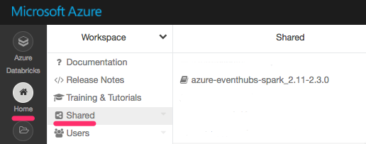

Introduction
Apache Spark it is an open-source fault tolerant distributed computing framework and scalable data processing system, which is part of Apache Software Foundation. Spark is an actively maintained project with vibrant community that consists of multiple components with Spark Core as a foundation of it. Other components include Spark SQL, Spark Streaming, Spark Structured Streaming, MLlib Machine Learning Library and GraphX.
Note:
“Apache Spark is a powerful open source processing engine built around speed, ease of use, and sophisticated analytics. It was originally developed at UC Berkeley in 2009.” - Databricks
Use cases for Spark include data processing, analytics, and machine learning for enormous volumes of data in near real time, data-driven reaction and decision making, scalable and fault tolerant computations on large datasets. Examples may include analyzing events from sensors arriving with high frequency from multiple types of sources, performing real-time processing and machine learning to determine health of the system and raising immediate alerts to act upon, and persisting all events into some data lake for historical purposes, and many more.
Spark has a concept of “connectors” that help Spark can interact with many systems to consume data from or to write data to. For example, to consume data from Kafka topics we can use Kafka connector, and to write data to Cassandra, we can use Cassandra connector.
Spark is available using Java, Scala, Python and R APIs, but there are also projects that help work with Spark for other languages, for example this one for C#/F#.
What are we doing and why?
In this article, we are going to set up a data ingestion system and connect to it from Spark to consume events to do further processing. As an example I’ve chosen to use Twitter data as a source, because it is freely available to anyone who creates a Twitter App, and new data comes in real-time.
As a use case, why would anyone need to process data from Twitter in near real-time? There might be cases when it’s necessary to look at messages with certain hashtags, process them in a certain way and react on them, or redirect them to some other system. For example, what if we wanted to determine if there are tweets that pose threat to someone, and immediately put the corresponding account under review, including tweets in different languages, or analyzing tweets on presence of issues and then sending a notification to someone responsible for fixing those issues. Analysis of data might involve much more complicated processing and machine learning, but the idea is the same.
When there is a task to process stream of data coming from multiple different sources, it is convenient to use a massively scalable pub/sub message queue to serve as durable event aggregation log that can be written to from multiple independent sources and can be read from multiple independent consumers, and Spark can be one of them. Very often there is more than one system we need to consume events from. Tweets can contain issues, Stackoverflow can contain issues, emails can contain issues, sensors might trigger an issue, and in that case it would be beneficial to direct all sources of data to something like Apache Kafka, Azure Event Hubs or Amazon Kinesis, to serve as an input layer to Apache Spark before it performs data processing.
Discovering a new Apache Spark connector
There has recently been a release of a new Open Source Event Hubs to Spark connector with many improvements in performance and usability. Check out the Github repository of the project.
In this article, we are going to:
- Create an Event Hubs instance
- Create a Spark cluster using Azure Databricks
- Use an open-source azure-event-hubs-spark connector
- Create two Databricks notebooks: one for sending tweets to Event Hubs, second one for consuming tweets in Spark
Note:
None of the steps chosen as an example for the article should prevent you from trying those things on a platform of your choice. Event Hubs can be replaced with Kafka, Jupyter notebooks can be used instead of Databricks notebooks, and etc. Future articles will demonstrate usage of Spark with different systems!
Creating an Event Hubs instance
If you don’t have Azure account, you can start a free trial. Search for “Event Hubs” resource and choose “create”.
Depending on the load you expect, message frequency and retention characteristics, you can select different throughput units. After that we should have a namespace created, and the next step is to create an event hub. A namespace is like a container for several event hubs, which are like topics.
Each event hub can have one or more consumer groups for parallel and independent consumption of messages. In this case, I’m just going to use the default consumer group when reading events from the hub.
Take a note of the following entries:
- Event Hubs namespace
- Event Hubs name
- SAS key name ("Policy name")
- SAS key value (“Primary Key”)
-
Connection string, should be in format similar to:
Endpoint=sb://<eventhubs-namespace>.servicebus.windows.net/;SharedAccessKeyName=<sas-name>;SharedAccessKey=<sas-key>
At this point, the Event Hubs instance is created and we’re ready to set up the Spark cluster.
Setting up a Spark cluster
There are several options for Spark cluster creation on Azure: Databricks, HDInsight, Messos, etc. I have recently written a documentation article on how to use Kubernetes as a scheduler for Spark jobs (different than settup us Standalone Spark cluster), check it out here if you're curious. In this example, I chose to use Azure Databricks, because it provides an easy way to create clusters, terminates them after a period of inactivity, integrates with Databricks interactive notebooks and is simple to work with.
There are great instructions on how to create a cluster using Azure Databricks here. This is what the dashboard shows when the cluster is creating:
After the cluster is ready, we need to create a notebook (two notebooks, more precisely). Notebooks in Databricks are like Jupyter notebooks, they allow writing code in Scala or Python and runing it against the Spark cluster. In this example I’ve created two notebooks: one for sending tweets to the Event Hubs, and second one for consuming tweets using Spark Structured Streaming. There is great documentation on Structured Streaming describing many things we can do with it.
So far the Spark cluster and Event Hubs are two independent entities that don’t know how to talk to each other without our help.
Connecting Event Hubs and Spark
Let’s open the first notebook, which will be the one we will use to send tweets to the Event Hubs. Later we can consume these events with Spark from the second notebook.
As you san see, in my Scala notebook, I can write regular Scala code and it will show the results right below after running it with Shift+Enter.
Before we write any code mentioning Event Hubs, we should import a library with the Event Hubs connector. To add a library to a Spark cluster on Azure Databricks, we can click Home -> Shared, then right click Create -> Library:
This allows to add a package from Maven Central or other Spark Package to the cluster using search. The one we need is "azure-eventhubs-spark_2.11" with a version 2.3.0.
All future libraries added will be visible here as well:
After the package is added, we will be allowed to import the library in the code with no errors:
import org.apache.spark.eventhubs._
Getting Tweets
To send data to the Event Hubs, we first need to retrieve tweets. For that to work, we need to complete a few fields on Twitter configuration, which can be found under your Twitter App:

Producing data
With Event Hubs connection information and Twitter connection information, we can run the code in the first notebook and start populating the Event Hubs with tweets:
Consuming data
In the second notebook, we can receive and process messages coming in from Event Hubs.
First question that comes to mind is, what is the data format of messages that are sent from the Event Hubs? It is possible to find out if we connect to the incoming stream and output it into the notebook console. In Spark it is possible to do if we specify “eventhubs” as stream format and pass a collection of key-value parameters with eventhubs connection information when using the “readStream” command:
val incomingStream = spark.readStream.format("eventhubs").options(customEventhubParameters.toMap).load()
After the stream is instantiated, we can use the printSchema function to have stream schema displayed:
incomingStream.printSchema
To display the content of messages to the console, the following command is useful:
incomingStream.writeStream.outputMode("append").format("console").option("truncate", false).start().awaitTermination()
Truncate is set to false because we want to see the full body of messages.
From the stream schema it is visible that there is a “body” column of a binary type, which we can convert to string, because we have written tweets in string format on the Event Hubs side. It is hard for humans to read byte arrays:
val messages = incomingStream.selectExpr("cast (body as string) AS Content")
messages.writeStream.outputMode("append").format("console").option("truncate", false).start().awaitTermination()
This is a second notebook, feel free to scroll through:
The second part for this article is coming up where we are going to do machine learning processing on the tweets. Stay tuned!
Update
This article is now a part of Azure Databricks documentation, which you can view here.
Connect
Follow me on twitter @lenadroid if you found this article interesting or helpful. My direct messages are open, always happy to connect, feel free to reach out with any questions or ideas!